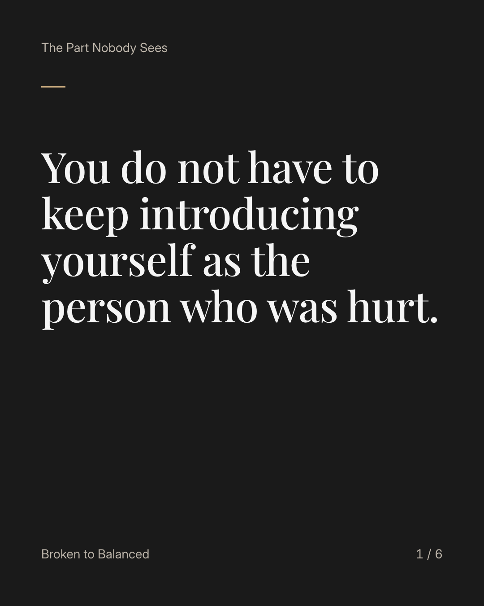
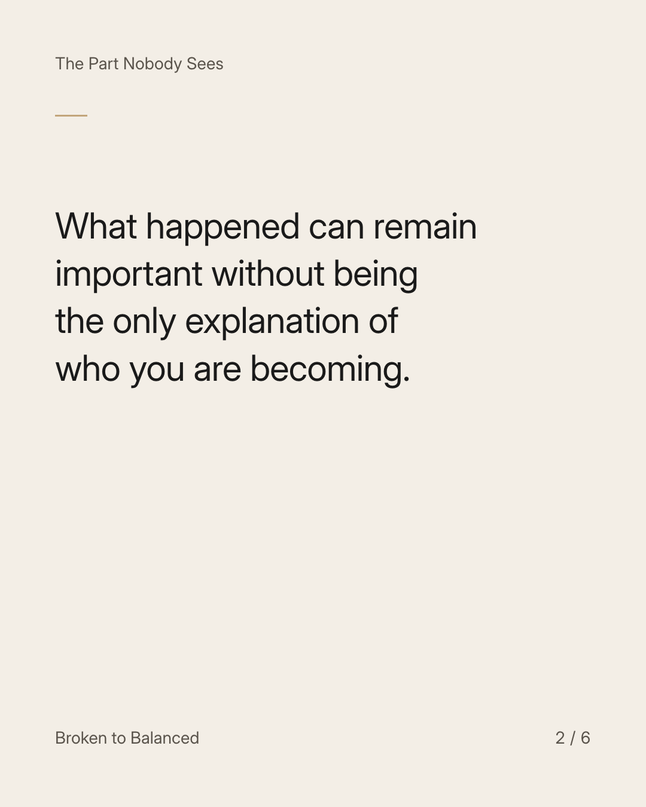
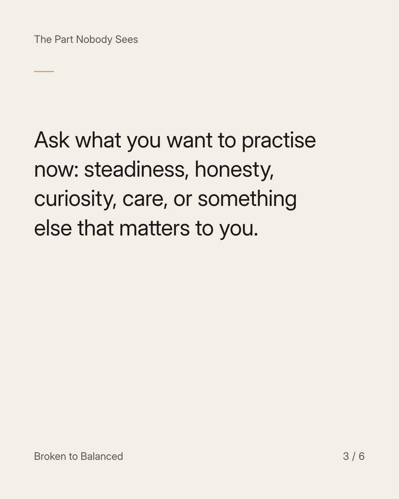
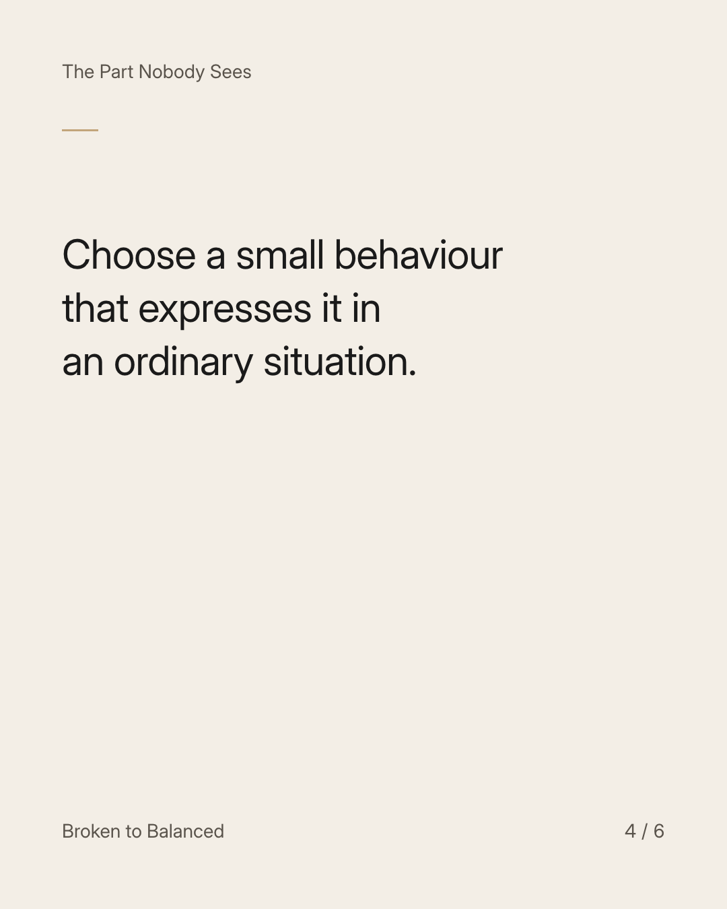
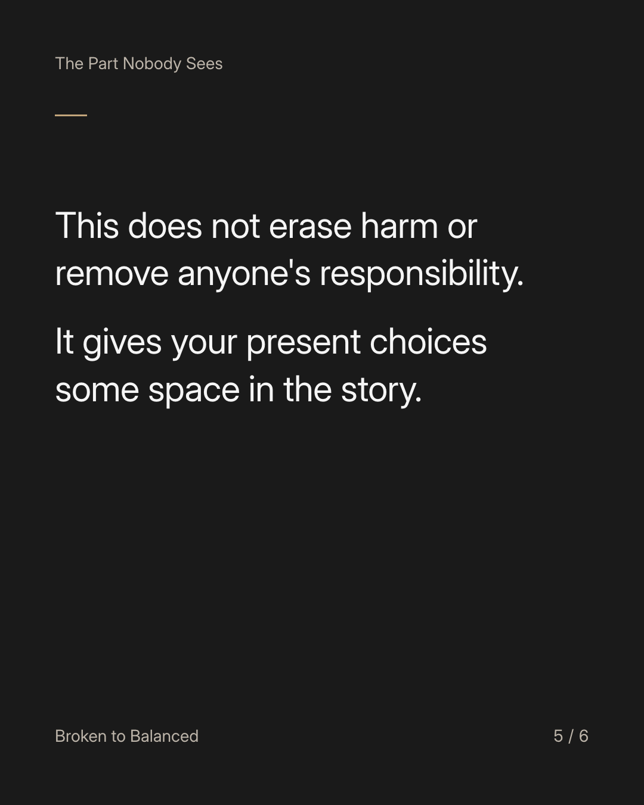
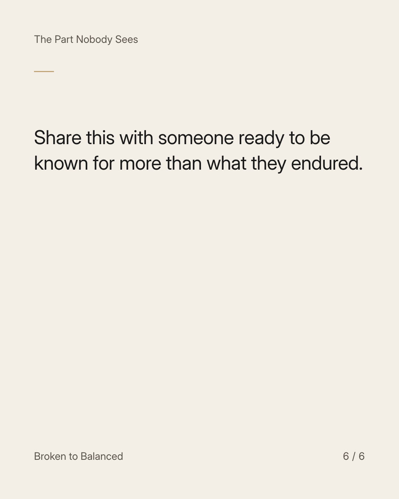

Exact text and accessibility text
You do not have to keep introducing yourself as the person who was hurt.
Slide 1 of 6. You do not have to keep introducing yourself as the person who was hurt.


Exact text and accessibility text
What happened can remain important without being the only explanation of who you are becoming.
Slide 2 of 6. What happened can remain important without being the only explanation of who you are becoming.


Exact text and accessibility text
Ask what you want to practise now: steadiness, honesty, curiosity, care, or something else that matters to you.
Slide 3 of 6. Ask what you want to practise now: steadiness, honesty, curiosity, care, or something else that matters to you.


Exact text and accessibility text
Choose a small behaviour that expresses it in an ordinary situation.
Slide 4 of 6. Choose a small behaviour that expresses it in an ordinary situation.


Exact text and accessibility text
This does not erase harm or remove anyone's responsibility. It gives your present choices some space in the story.
Slide 5 of 6. This does not erase harm or remove anyone's responsibility. It gives your present choices some space in the story.


Exact text and accessibility text
Share this with someone ready to be known for more than what they endured.
Slide 6 of 6. Share this with someone ready to be known for more than what they endured.
Exact caption
Plain-text fallback: select and copy the caption.